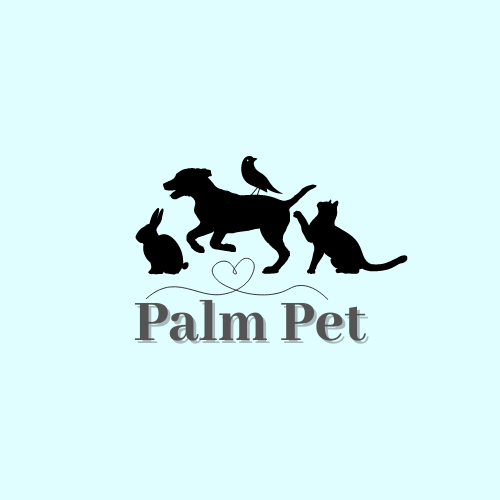
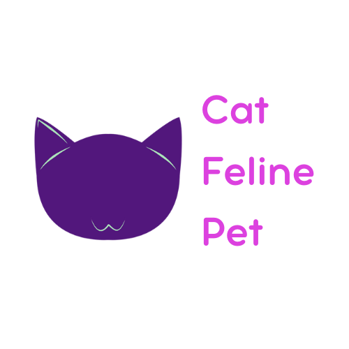

Projetos
Palm Pet
O Palm Pet foi um projeto em grupo, feito na disciplina de Extensão no 1° período. É um aplicativo voltado para a saúde animal.
O Palm Pet é um aplicativo que vai atender as necessidades de acompanhamento da rotina de cuidados de animais domésticos. Ele busca oferecer a conexão entre tutores e clínicas veterinárias, além de oferecer um sistema em que é possível acompanhar todo o histórico de saúde do seu pet, como também um filtro especial para veterinários que atendem animais exóticos.
Ainda não foi iniciado o desenvolvimento do aplicativo, mas pretendemos iniciar e melhorar ao longo da graduação.
Protótipo do aplicativo
Mais sobre o aplicativo
Cat Feline Pet
O Cat Feline Pet foi um website simples desenvolvido somente com HTML e CSS na disciplina de Fundamentos de Web Design afim de aprender como essas duas tecnologias funcionam.
Link para o site
Outros
Além desses projetos, sempre posto exercicios que uso para treinar minha lógica em algoritmos. Alguns exercicios são em linguagem C passados nas aulas e outros são de cursos livres na internet, para aprender linguagens novas como JavaScript.
Link para o github